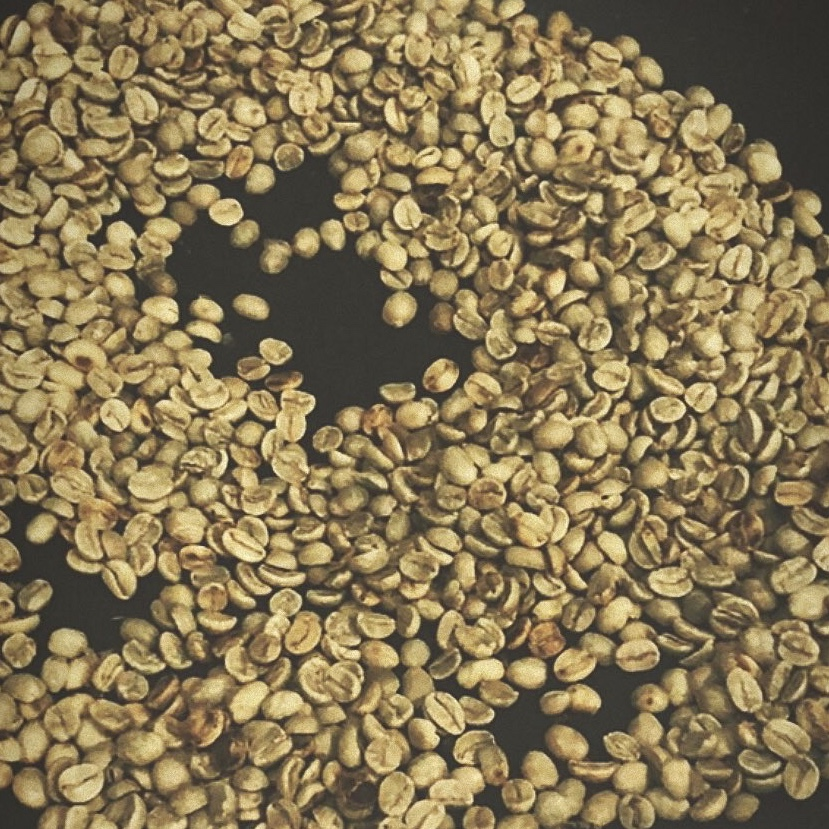
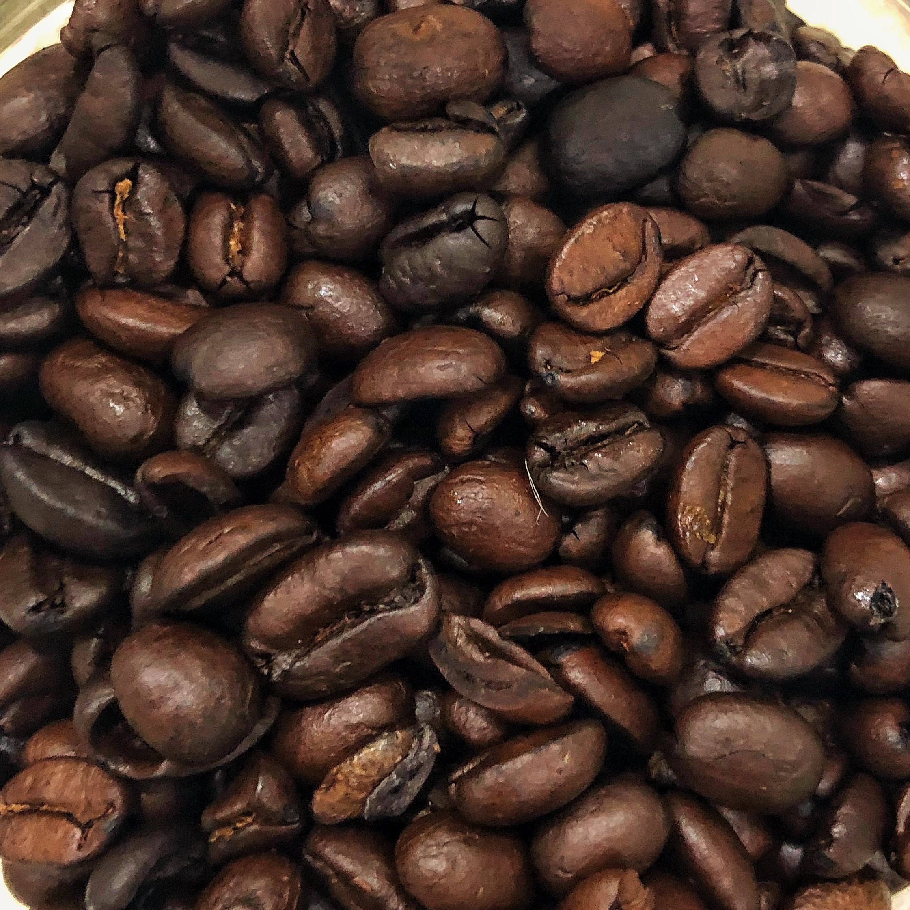
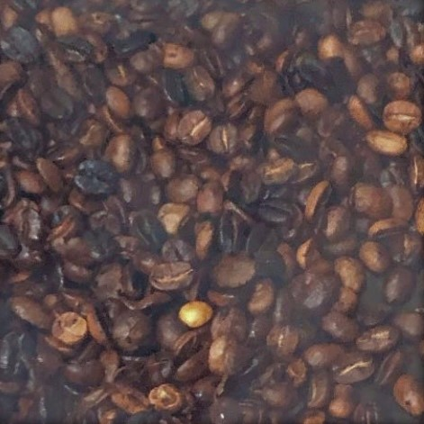

The next step after picking the beans is roasting them. However, was that always the case?
The Answer to that question is surprisingly no! Coffee consumers only started to roast their coffees in the 19th century. Companies began to roast their coffee beans
and sell them around hat time as well. Moreover, it is only at some time in the 20th Century that the sales of pre-roasted coffee beans surpassed the sales of the
green coffee beans. Thus, starting the Pre-Roasted-Coffee-Beans-Comodity era.
Since we started with beans and talked about some of the features you should look out for whlist picking your coffee; here, we are going to examine how roasting the coffee beans would affect those features and more.
There are 4 types of roasted coffee:
- Light roasted coffee
- Meduim roasted coffee
- Dark roasted coffee
- Darker than Dark roasted coffee
Light roasted coffee reserves the beans' natural scent and taste the best. Also, the coffee beans' size does not increase by a big margin, and they are known for their dry non-oily texture. They have the most dense caffiene. The roasting time usually end by the first-crack
Although the light roasted beans are the most prefered in the coffee speciality community, their colour is not. Therefore, that colour is replaced by a caramel-like colour via a longer roasting time. Furthermore, this longer roasting time decreases the acidty of the coffee; however, it increases the oiliness by a little. They are still fairly dry though, just oilier than the lightly roasted ones. Usually, the roasting time ends after the first crack and before the second one.
In this roast, the beans usually lose their naturak taste and scent, and they are replaced by the common coffee taste and scent. The gain an oily texture and ,since the moisture has evaporated because of the high temreture and long roasting time, they increase significantly in size. Therefore, the caffiene density decreases. The roasting time usually stops around the second crack.
This rarley used and highly uncommon. The coffee is roasted to such level that it losses all its taste and gain an ashy taste with a very oily-glossy texture.